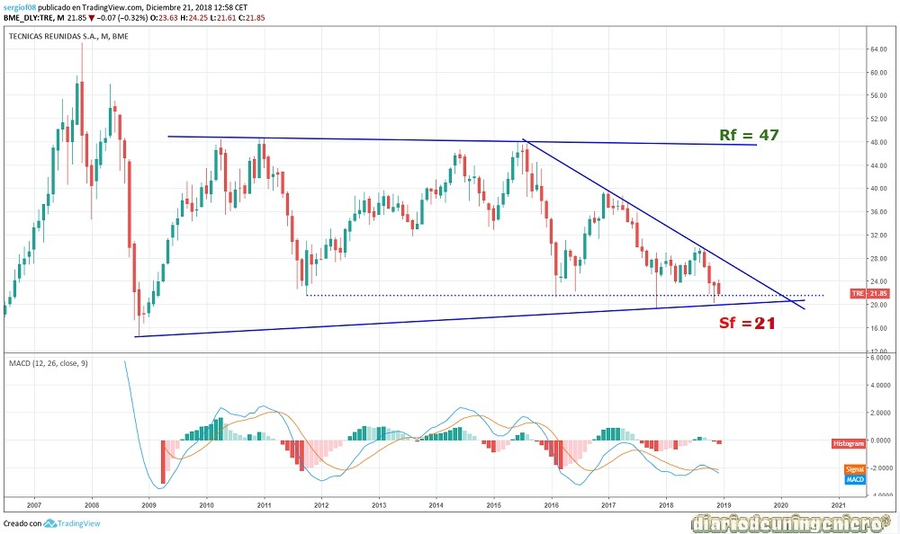
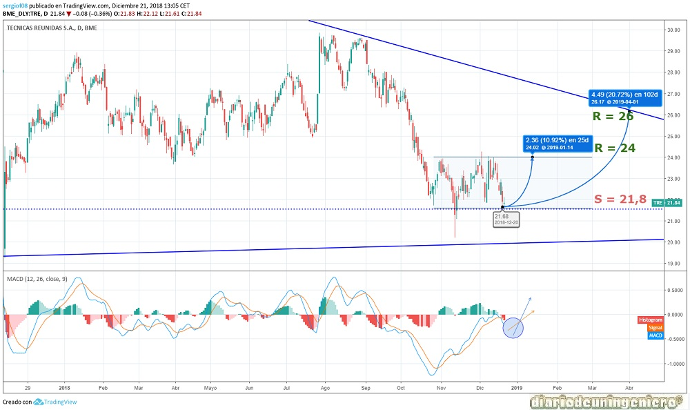

Técnicas Reunidas is a multinational company specialized in infrastructures for the oil and gas sector. Therefore, it is very sensitive to changes in the prices of these raw materials and, above all, to the production of the same, which is linked to the price.
Técnicas Reunidas is the fusion of several Spanish and American groups. In 1972 it would absorb the Tecniresa company and take its current name. From the 80's it would expand internationally since before that it was basically in America and Spain, extending to the Middle East, the Far East and the whole Mediterranean.
The shareholding is divided between Jose Llado (minister in the early years of the Suárez government) and funds American people. It comes from families of the Spanish aristocracy of the twentieth century and his family is quite influential in the political and economic scene of Spain.
Its main areas are the following:
| ### | 2014 | 2015 | 2016 | 2017 | 2018 |
|---|---|---|---|---|---|
| Debt/ Cash company | Deuda Total Debt (M) | -664 | -532 | -492 | -231 | -201 |
| Beneficio/valor acción | |||||
| Capitalization(M) | 2.028 | 1.948 | 2.177 | 1.479 | 1.194/td> |
| EBDITA (M) | 170 | 105 | 205 | 121 | 83 |
| PER | - | 21,65 | 9,54 | 28,9 | 37,41 |
| Net Benefit (M) | - | 59,8 | 129,2 | 39,5 | 27 |
| Dividend (%) | - | 1,4 | 1,4 | 0,93 | |
| Profitability per Share | - | 4,47 | 3,85 | 5,45 | 4,08 |
| Debt/EBDITA | -3.9 | -5,06 | -2,4 | -1,9 | -2,42 |
If we look at the long-term chart we see a big drop since 2014 caused by very negative results, which were the prolegomena of what was to happen in later years. From there it would go from having very small profits to having large losses and the price would reach 2 Euro in just two years, a fall of 91% . After that the value would rebound strongly against all forecasts, reaching 5 Euro, with a revaluation of more than 200% in less than a year. This would be caused by the closing of shorts by several funds and the purchase of the company itself to mitigate losses. From here I would enter a side channel that was not broken until this year with the loss of the two Euro that would lead to a capitalization never seen before and to the action touched the half Euro. This seems to be the value that must not be transferred under any circumstances to avoid entering a new phase of stock market panic.

If we look at the short term, we see that it takes 3 months in a lateral channel in the lower part of the channel oscillating between 24 and 21.8 euros. It comes from having made maximums in summer in the heat of the rise of oil. If it were to bounce up to 24 euros, which is the upper part of the short-term channel, we would <11> generate 11% of profits and if it did so in the medium term at 26 euros it would be 20% . This is quite likely to happen since in my opinion all the indexes will register increases at the beginning of 2019 and as May as top where they will go back down until the summer.

© 2016 - All Rights Reserved - Diseñada por Sergio López Martínez
![[Valid RSS]](https://www.feedvalidator.org/images/valid-rss-rogers.png "Validate my RSS feed")